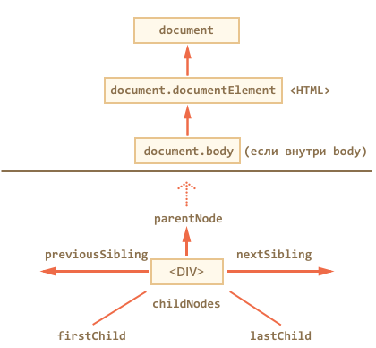

Web и DHTML
Объектная модель
Леонид Волканин
ИМКН УрФУ

window — в браузере глобальный объект JavaScript

DOM – представление документа в виде дерева объектов, доступное для изменения через JavaScript
Октябрь 1998 — «DOM Level 1»
Затем придумали ещё свойства и методы, и появился «DOM Level 2»
Поверх них добавили ещё «DOM Level 3» и готовится DOM 4
Некоторые старые возможности, не включенные в стандарт, но и не выкинутые, иногда условно называют «DOM Level 0»
<!DOCTYPE html> Посмотреть вживую<html><head><meta charset="utf-8"><title>DOM tree</title><!-- JS Escape - github.com/mathiasbynens/jsesc --></head><body><h1>DOM tree</h1><p>F12 > Console</p></body></html>
nodeName nodeType nodeValue
#document DOCUMENT_NODE null
html DOCUMENT_TYPE_NODE null
HTML ELEMENT_NODE null
HEAD ELEMENT_NODE null
#text TEXT_NODE \n\t\t
META ELEMENT_NODE null
#text TEXT_NODE \n\t\t
TITLE ELEMENT_NODE null
#text TEXT_NODE DOM tree
#text TEXT_NODE \n\t\t
#comment COMMENT_NODE JS Escape - github.com/mathiasbynens/jsesc
#text TEXT_NODE \n\t
#text TEXT_NODE \n\t
BODY ELEMENT_NODE null
#text TEXT_NODE \n\t\t
H1 ELEMENT_NODE null
#text TEXT_NODE DOM tree
#text TEXT_NODE \n\t\t
P ELEMENT_NODE null
#text
nodeName nodeType nodeValue
#document DOCUMENT_NODE {}
#comment COMMENT_NODE DOCTYPE html
HTML ELEMENT_NODE {}
HEAD ELEMENT_NODE {}
TITLE ELEMENT_NODE {}
META ELEMENT_NODE {}
#comment COMMENT_NODE JS Escape - github.com/mathiasbynens/jsesc
BODY ELEMENT_NODE {}
H1 ELEMENT_NODE {}
#text TEXT_NODE DOM tree
P ELEMENT_NODE {}
#text TEXT_NODE F12 > Console
SCRIPT ELEMENT_NODE {}
SCRIPT ELEMENT_NODE {}
SCRIPT ELEMENT_NODE {}
При чтении неверного HTML браузер корректирует его для показа и построения DOM
Например, всегда будет верхний тег <html>, даже если в тексте его нет
Браузер обрабатывает ошибки в документе, закрывает теги и т.д.
<li>Раз Посмотреть вживую<li>Два<li>Три
Объект document может быть получен из разных API
window.documentcontentDocument объекта iframeresponseXML объекта XMLHttpRequestownerDocument.documentElement.createElement(...), .createTextNode(...), и т.п..getElementById(...), .getElementsByTagName(...), ...Интерфейс Document наследует также интерфейсы Node и EventTarget
.body, .head.images[] — исторически из «DOM Level 0».forms[].links[].anchors[]
.nodeName, .nodeType, .nodeValue (изменяемое).ownerDocument.parentNode, .childNodes, .firstChild, .lastChild, .previousSibling, .nextSibling.appendChild(new), .insertBefore(new,ref), .removeChild(node), .removeChild(new,old)
.length.item(n) — «метод по-умолчанию»Возвращается, например, свойством .childNodes
Можно childNodes[0], но это не массив (нет forEach, map, ...)
Этот интерфейс — «живой», но readonly (нельзя заменить элемент как-то так: childNodes[i] = ...)

<div id="content-holder"><div id="content">Элемент</div></div><script>console.log( content ); // элемент по idconsole.log( window['content-holder'] ); // дефисvar e = document.getElementById('content');e.style.background = 'red';// а если с одним id несколько ?</script>
var elements = document.getElementsByTagName('div');var elements = document.head.getElementsByTagName('script');
document.getElementsByTagName('input').value = 5; // :(document.getElementsByTagName('input')[0].value = 5; // :)
Возвращает коллекцию элементов с данным атрибутом name
Например, сгруппированные элементы input
На практике используется редко
querySelectorAll коллекция элементов внутри заданного, удовлетворяющих CSS-селектору
querySelector — только первый элемент
document.querySelectorAll('.slide code').length
document.querySelectorAll(':hover')
Метод element.matches(css) ничего не ищет, а проверяет, удовлетворяет ли element селектору css, возвращает true / false
Метод element.closest(css) ищет ближайший элемент выше по иерархии DOM, подходящий селектору css
Сам элемент тоже включается в поиск
// DOM Level 1elem = document.createElement("div");document.getElementbyId('xxx').appendChild(elem)// содержимое элемента HTMLdocument.body.innerHTML = '<p>текст</p>'// HTML элемента целиком (есть тонкости)document.body.children[0].outerHTML = '<p>текст</p>';
table=document.createElement("table");// HTMLElementtable.border=1;// DOM Level 1 / XMLtable.setAttribute("id","tbl02");// интерфейс NamedNodeMapattr=document.createAttribute("cellSpacing");attr.nodeValue=0;table.attributes.setNamedItem(attr);
// (DOM Level 1)t = document.createTextNode("Новый абзац");p = document.createElement("p");p.appendChild(t)
data — содержимое текстового узла (read/write)
textContent — текст внутри элемента, за вычетом всех тегов
element.innerHTML = '<u>УрФУ</u>' → Нажми меня
element.textContent = '<u>УрФУ</u>' → Нажми меня
document.write(str) дописывает текст в текущее место HTML до того, как браузер построит из него DOM
var url='//ads.com/buyme?screen='+screen.width+"x"+screen.height;document.write('<script src="'+url+'"></scr'+'ipt>');
Работает только пока HTML-страница находится в процессе загрузки
Попытка дописать что-то в «закрытый» документ открывает его заново, при этом все текущее содержимое удаляется
Узел DOM – объект, может иметь пользовательские свойства и методы
При присвоении нестандартных атрибутов DOM-свойство не создаётся
<div id="elem" href="http://ya.ru" about="Yandex"></div><script>alert( elem.id ); alert( elem.about );elem.about='Elephant' alert( elem.about );</script>
Стандарт HTML5 специально разрешает атрибуты data-* и резервирует их для пользовательских данных
<div id="elem" data-about="Web" data-user-location="UrFU"><script>alert( elem.getAttribute('data-about') );alert( elem.getAttribute('data-user-location') );alert( elem.dataset.userLocation );</script>
Документация dev.w3.org/html5/markup/elements.html для слабаков
console.dir(document.body)
console.log(document.body)
Свойство element.style возвращает объект, который дает доступ к стилю элемента на чтение и запись
elem.style.border = "1px solid black"background-color => elem.style.backgroundColor
Исключения
float => elem.style.cssFloatclass => elem.className
Работает ли div.style="color:blue" ?
Для полной перезаписи CSS у элемента рекомендуется использовать свойство cssText
Свойство style содержит стиль, указанный в атрибуте элемента, без учёта каскада CSS
<head><style> body { color: red } </style></head><body><script>alert(document.body.style.color);</script></body>
window.getComputedStyle(element[, pseudo])
здесь pseudo — это например ':before', но не ':visited'
<head><style> body { color: black } </style></head><body><script>var computedStyle = getComputedStyle(document.body);alert(computedStyle.color);</script></body>
Вычисленное значение — получено после применения всех правил CSS и CSS-наследования, например, width: auto или font-size: 125%
Окончательное значение — непосредственно применяемое к элементу, размеры приводятся к пикселям
Сейчас браузеры понимают getComputedStyle() как окончательное значение
У этого абзаца style="font-size:101%"
Обобщенное название библиотек, которые добавляют в старые браузеры поддержку возможностей, которые в современных браузерах являются встроенными
if (document.documentElement.firstElementChild === undefined) {Object.defineProperty(Element.prototype, 'firstElementChild', {get: function() {var el = this.firstChild;do {if (el.nodeType === 1) {return el;}el = el.nextSibling;} while (el);return null;}});}